Animation Textures and using the AnimToTexture plugin
Understanding Animation Textures
Animation Textures is a technique for storing animation data in a texture and animating the mesh by using a special material to read and replay the animation data.
This technique is typically used for animating large numbers of background characters with minimal overhead. It's used in the Epic Games City Sample to animate the crowds walking around the city. If you open the City Sample and play the MassCrowd map you will see a scene like this in which animation textures are used to animate the crowd members:
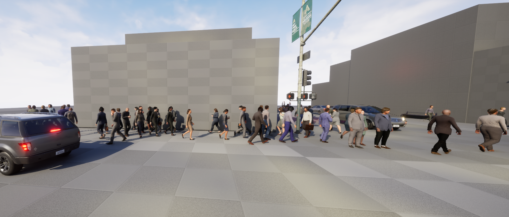
This article describes how animation textures are created. It is part of a set of articles about animation textures which describe how animation textures are created, How Animation Texture Materials are created and how they can be used by MASS, PCG and Niagara.
Unreal 5.4 ships with a plugin called AnimToTexture, this is not enabled by default so you will need to enable it for anything described here to work. There is lots of content on the web about version 5.1 and 5.2 of this AnimToTexture plugin but it changed for version 5.4 and not much has been written about the latest version.
It's all about materials
Unreal Engine implements vertex animation by using materials, material instances and material layers. It's helpful to understand the relationship between these parts:
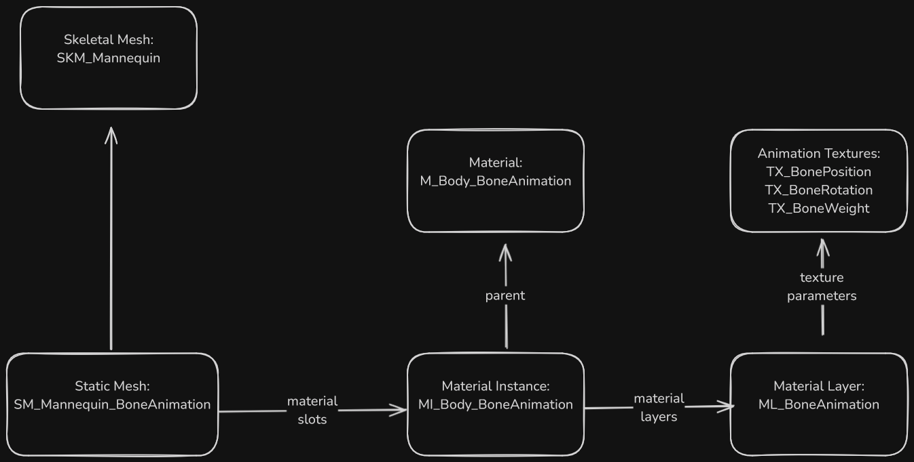
A skeletal mesh has materials and/or material instances which are specified in its material slots. When a static mesh is created these materials or material instances are copied to the material slots of the static mesh, after that the materials on the skeletal mesh are not used.
The process for creating materials and material instances which can be used with animation textures is described in Animation Texture Materials. We will be used materials created using the process described on that page.
The Approach
Animation textures are used to animate a static mesh either by animating the vertices or by animating the bones. The AnimToTexture plugin supports both. In this article to keep it simple I will only refer to bone animation.
This is a simplified overview of what happens when we create animation textures:
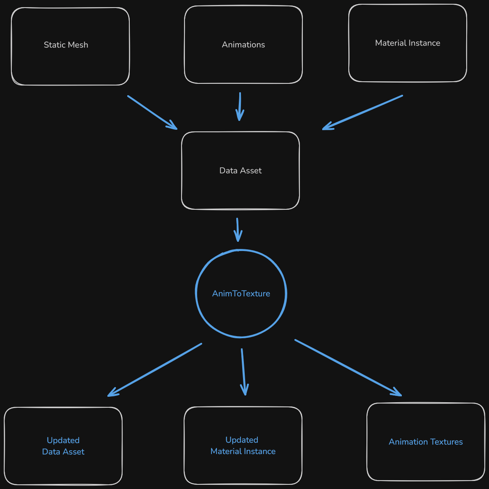
We start with:
- a skeletal mesh
- a static mesh created from the skeletal mesh
- materials
- material instances
- animations
The process is controlled by a data asset. The data asset stores information such as the paths to the meshes, the textures, the materials, and other parameters such as texture size.
Once we have populated the data asset we execute the AnimToTexture process to:
- create multiple textures containing animations for bone positions and rotations
- update material instances
- update the data asset
After the process has been run the data asset contains information about the animations we processed so that we can, for example, use a blueprint to read which frames a set of animation uses and replay those animations.
What is in the AnimToTexture plugin
The AnimToTexture plugin ships with Unreal 5.4, on a typical installation its files can be found in the directory "c:\Program Files\Epic Games\UE_5.4\Engine\Plugins\Experimental\AnimToTexture".
Everything described here requires this plugin be enabled.
In addition to the code used to create the animation textures, the plugin contains other useful files. These can be located under the /Engine/Plugins/AnimToTexture folder. This is split into two parts "AnimToTexture Content" and "AnimToTexture C++ Classes", we only ever use the "AnimToTexture Content" part and just refer to it as "AnimToTexture" which is the actual folder name.
If you can't see the /Engine/Plugins/AnimToTexture folder:
- make sure you have the AnimToTexture plugin enabled
- in the settings for the content browser (accessed with the button in the top right corner of the content browser window) make sure you have "Show Engine Content" and "Show Plugin Content" enabled.
| Files | Notes |
|---|---|
| Characters/Mannequin/BP_AnimToTexture | the editor utility blueprint which runs the AnimToTexture process |
| Characters/Mannequin/Data/DA_BoneAnimation | example data asset |
| Characters/Mannequin/Materials/BoneAnimation/M_Body_BoneAnimation | material |
| Characters/Mannequin/Materials/BoneAnimation/MI_Body_BoneAnimation | material instance |
| Characters/Mannequin/Textures/BoneAnimation/TX_* | animation textures |
| Materials/ML_BoneAnimation | material layer |
Some of these files have shipped in prior versions of Unreal, and some up to date Unreal example projects contain old versions of these files. For example if you download the City Sample for Unreal 5.4 you will find one version of ML_BoneAnimation in the AnimToTexture plugin (in your engine) and another version in /Content/Crowd/VAT/Materials/ (from the project). These two files are very different - it looks as if the one in the City Sample project is from Unreal Engine 5.2.
Steps
This section outlines the steps to take to (1) create animation textures for a specific static mesh, then (2) create a Niagara system to spawn a lot of animated static meshes, then (3) create a PCG system to spawn a lot of animated static meshes.
Creating the example project
For this example from the launcher (I am using 5.4.3) create a new Game, Third Person, Blueprint, Desktop project with starter content. Call it "VertexAnimation".
Go into Edit | Plugins and enabled the AnimToTexture plugin an restart.
Under the Content folder create a new folder called "ATMaterials".
In the content browser settings make sure "Show Plugin Content" and "Show Engine Content" are both enabled.
Protecting the engine files [Optional]
The AnimToTexture plugin contains static mesh files which reference material instance files which reference material files which reference material layer files which reference texture files. This makes it easy to accidentally update files contained in the plugin when generating new textures. To prevent this it is advisable to open the directory "c:\Program Files\Epic Games\UE_5.4\Engine\Plugins\Experimental\AnimToTexture\Content" in Windows Explorer and change all the files under this directory to read only. If you do accidently change any of these files you can recover then by running the Verify process from the launcher:
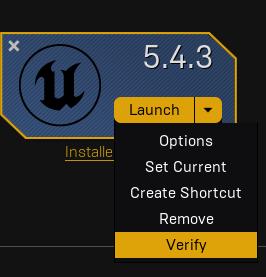
Setting up favorites [Optional]
We will be copying a number of assets from the AnimToTexture plugin folders to the /Content/ATMaterials folder and moving between these two folders frequently.
If you right click on the AnimToTexture folder and choose "Add To Favorites" and do the same thing for the ATMaterials folder you end up with both folders listed in your favorites list:
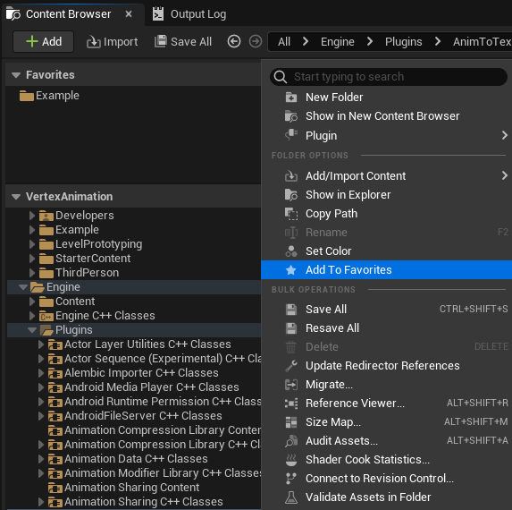
This means you can quickly move from one folder to the other and you can select assets in the plugin folder and just drop them on the ATMaterials folder in the favorites list.
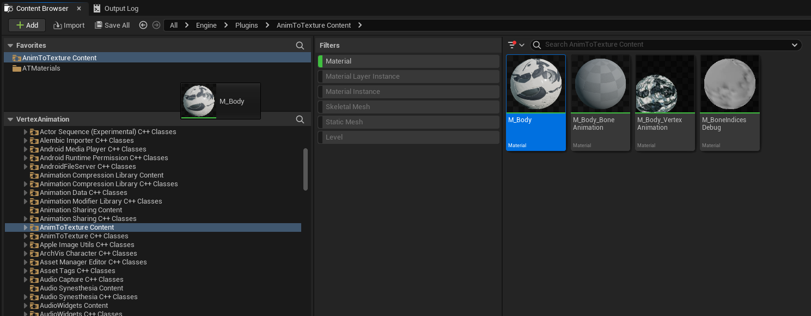
Creating a static mesh and materials
Follow the steps detailed in Materials for Animation Textures to create the static mesh and its materials and material instances.
Once you have completed this you should have an ATMaterials folder with the static mesh, a material, and two material instances:
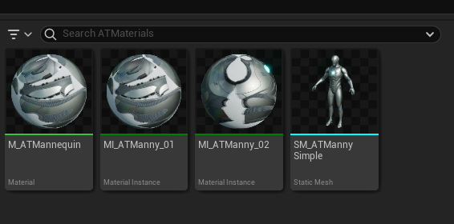
Setting the LOD level
The AnimToTexture plugin only generates animation textures for one level of detail. If the static mesh can be rendered with more than one level of detail you will see artifacts.
This image shows what happens when the two front characters are rendered with LOD 0, which has animation textures, and the two rear characters are rendered with LOD 1 which has no animation textures.
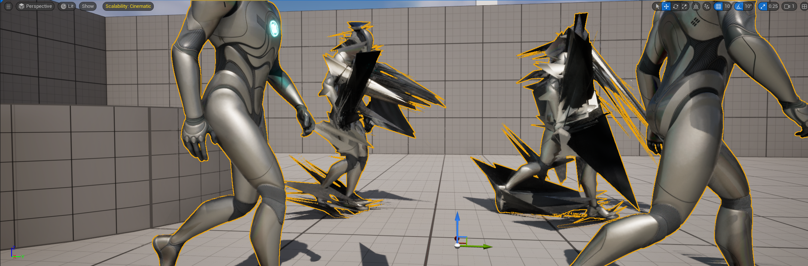
To prevent this problem open the static mesh SM_ATMannySimple and set the property "Number of LODs" to 1 and then press the "Apply Changes" button:
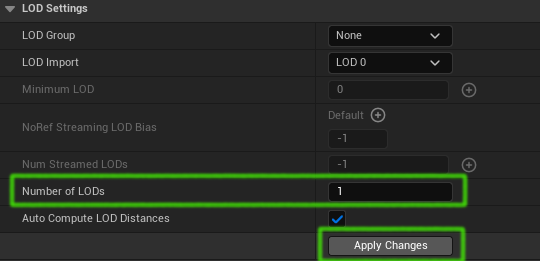
Creating the data asset
The animation texture creation process is controlled by a data asset. The easiest way to make one with the correct structure is to copy the one which ships with the plugin, so copy Engine/Plugins/AnimToTexture/Characters/Mannequin/Data/DA_BoneAnimation to the ATMaterials folder. Rename it "DA_ATBoneAnimation" and save it.
Creating texture files
The animation texture process populates pre-existing texture files. To get these go to the /Engine/Plugins/AnimToTexture/Characters/Mannequin/Textures/BoneAnimation and copy the 3 texture files into /Content/ATMaterials and rename them:
- TX_BonePosition to TX_ATBonePosition
- TX_BoneRotation to TX_ATBoneRotation
- TX_BoneWeight to TX_ATBoneWeight
We are renaming all these assets to make it clear when we are looking at the data object which asset it is referencing and to reduce the risk of overwriting the materials and textures which are included in the AnimToTexture plugin.
Populating the data asset
Open the data asset DA_ATBoneAnimation. It will be populated with the values from the AnimToTexture plugin like so:
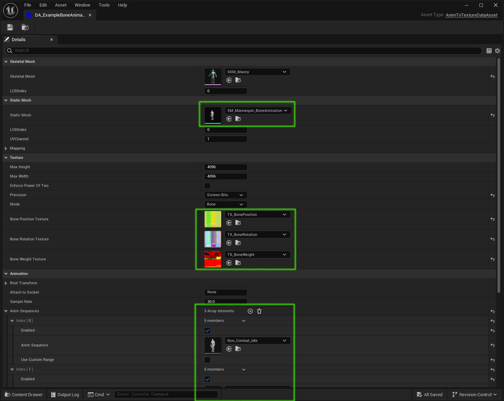
We will be changing all the items in the green boxes.
Make these changes:
- change the Skeletal Mesh to SKM_MannySimple
- the static mesh to SM_ATMannySimple
- the Bone Position Texture to TX_ATBonePosition
- the Bone Rotation Texture to TX_ATBoneRotation
- the Bone Weight Texture to TX_ATBoneWeight
For the purposes of this example we will be using 3 animations which go in the "AnimSequences" array property.
Replace the 3 existing animations with ones from the /Content/Characters/Mannequins/Animations/Manny folder. Change
- Anim Sequence Index[0] to MM_Run_Fwd
- Anim Sequence Index[1] to MM_Walk_Fwd
- Anim Sequence Index[2] to MM_Idle
The data asset should now look like this:
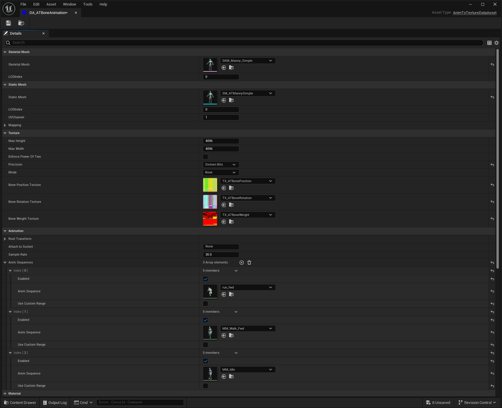
Configuring the AnimToTexture blueprint
The AnimToTexture blueprint contains the code which creates the animation textures and updates the material instance(s) to use those textures.
We will be editing the AnimToTexture blueprint which comes with the AnimToTexture plugin so we need to make a copy of it.
Copy /Engine/Plugins/AnimToTexture/Characters/Mannequin/BP_AnimToTexture to the /Content/ATMaterials folder and rename it "BP_ATAnimToTexture".
Open BP_ATAnimToTexture and make the following changes:
- delete everything in the "VertexAnimation" box, we only want to do bone animation, so it should look like this:
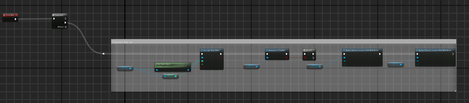
- delete the VertexDataAsset variable shown:
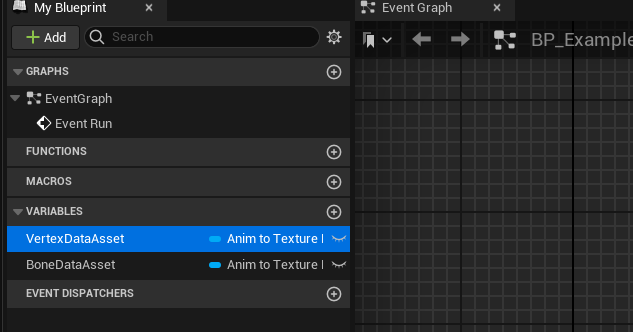
- click on the BoneDataAsset variable and change the default value to DA_ATBoneAnimation:
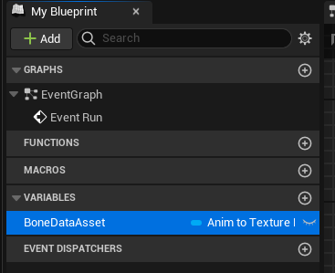
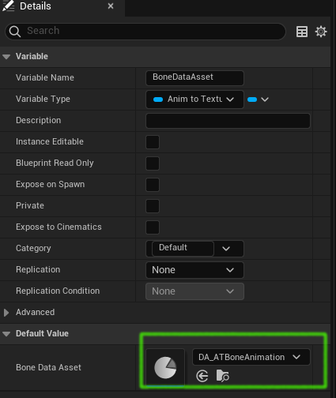
- click on the first "Update Material Instance from Data Asset" and change the material instance to MI_ATManny_01
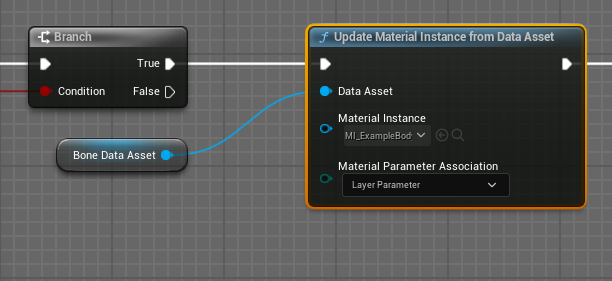
- click on the second "Update Material Instance from Data Asset" and change the material instance to MI_ATManny_02
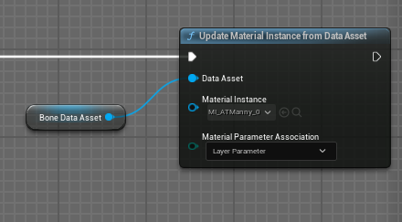
Compile and save BP_ATAnimToTexture.
Generating the animation textures
Save everything before doing this step.
Right-click the BP_ATAnimToTexture and click "Run Editor Utility Blueprint" as shown here:
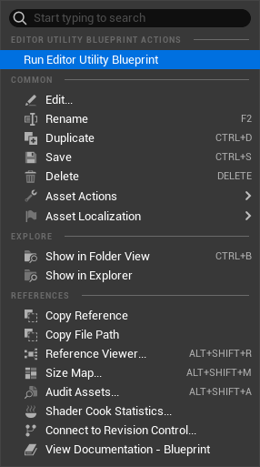
This will take a minute or two.
Check the Output Log window. If an error occurs this will be logged, there will not be any sort of popup alert. For example of one of the animations specified in the data asset does not have the same skeletal mesh as the specified static mesh you will see a warning like this:
LogAnimToTextureEditor: Warning: Invalid AnimSequence: run_fwd for given SkeletalMesh: SKM_Manny_Simple
Once it has finished you should see the data asset, material instances, static mesh and the animation textures have all been updated and need saving. Save everything.
Checking results
If you open the data asset and expand the Info > Animations section at the bottom you will see something like this:
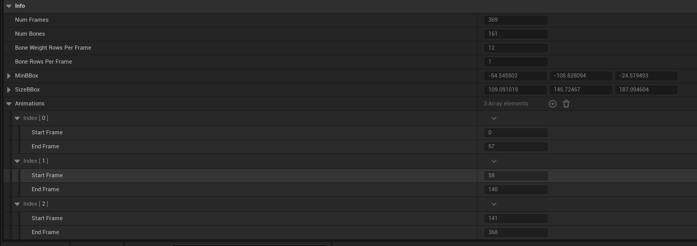
This shows the animations have been processed and data such as the number of frames, the animation bounding box and the individual animation lengths have been added to the data asset.
If you open the material instance MI_ATManny_01 and look at the Layer Parameters tab you will see the parameter values have been updated:
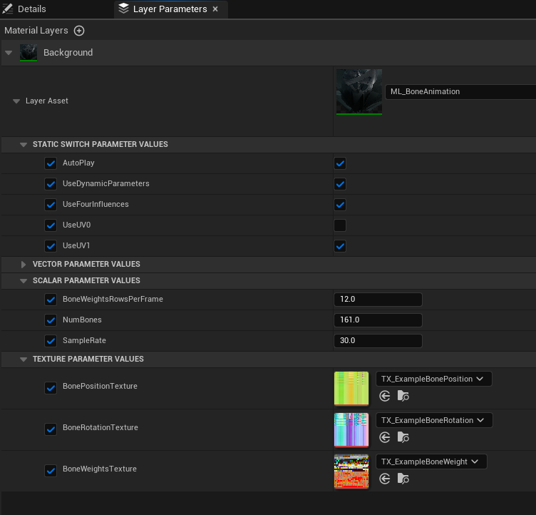
If you open the static mesh you should see it executing the first animation:
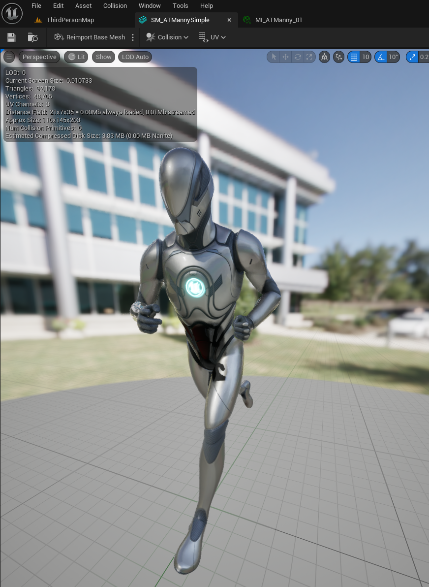
If you see something like this:
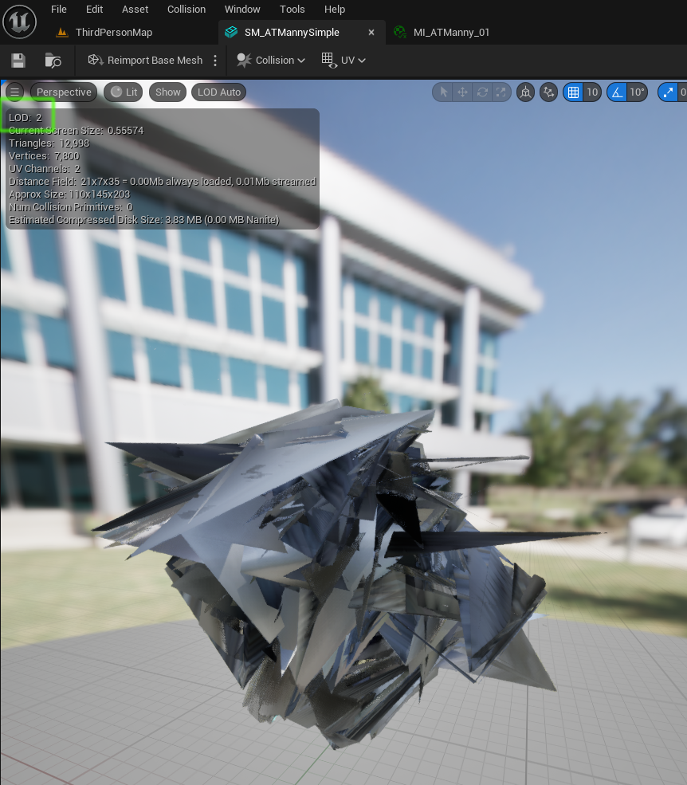
This happens when the static mesh does not have its "Number of LODs" property set to 1. Open the static mesh SM_ATMannySimple, change "Number of LODs" to 1, click "Apply Changes", save the static mesh and rerun the BP_ATAnimToTexture blueprint.
At this point you should have a static mesh with working bone animations. The next parts in this series will detail how to use that mesh in Niagara, blueprints and MASS.
Reference
Unreal Engine 5 AnimToTexture Plugin, How to Use it to make Vertex Animation Textures for crowds This is a great video by Kevin Romond based on Unreal 5.2.
UE5 AnimToTexture plug-in This is a translation of an article originally in Japanese
Baking Out Vertex Animation Tutorial
Feedback
Please leave any feedback about this article here